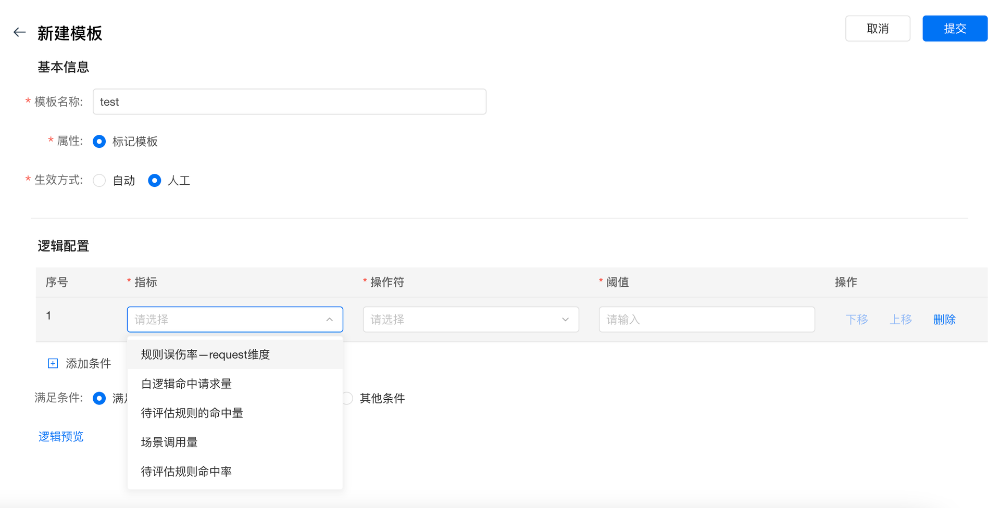
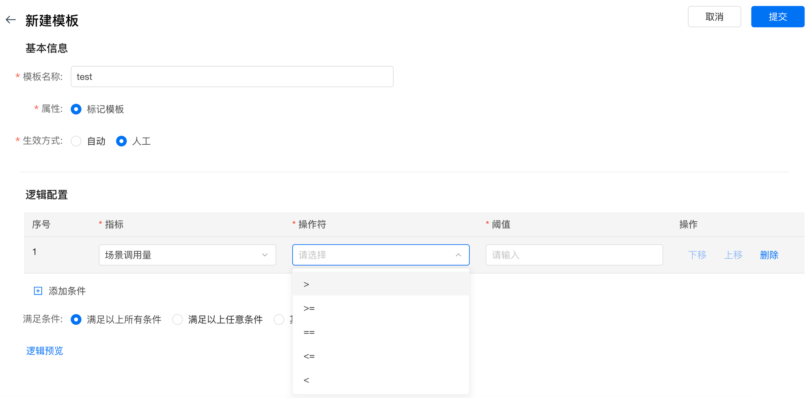
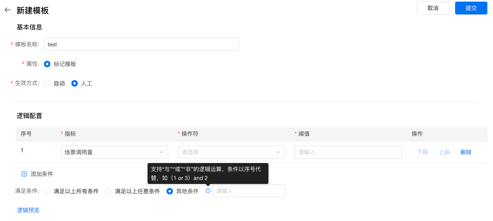
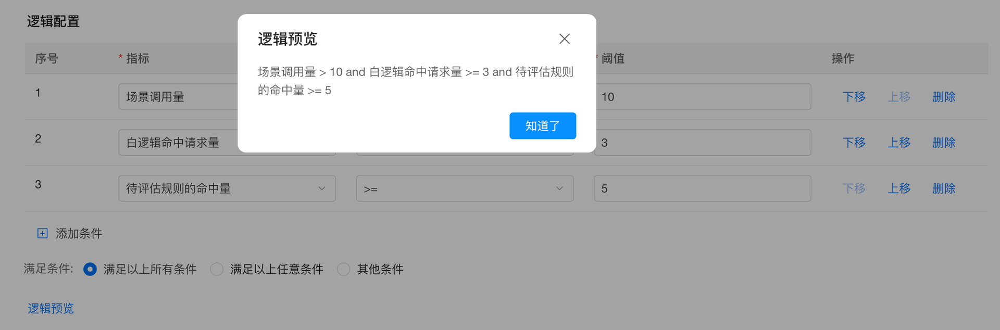
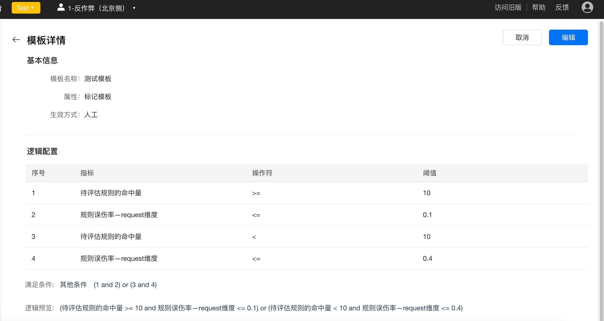
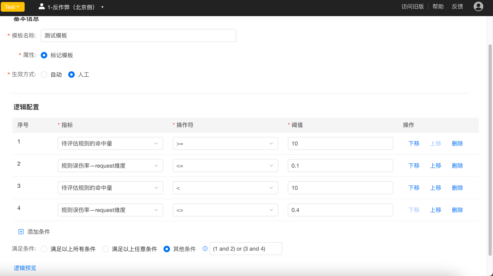
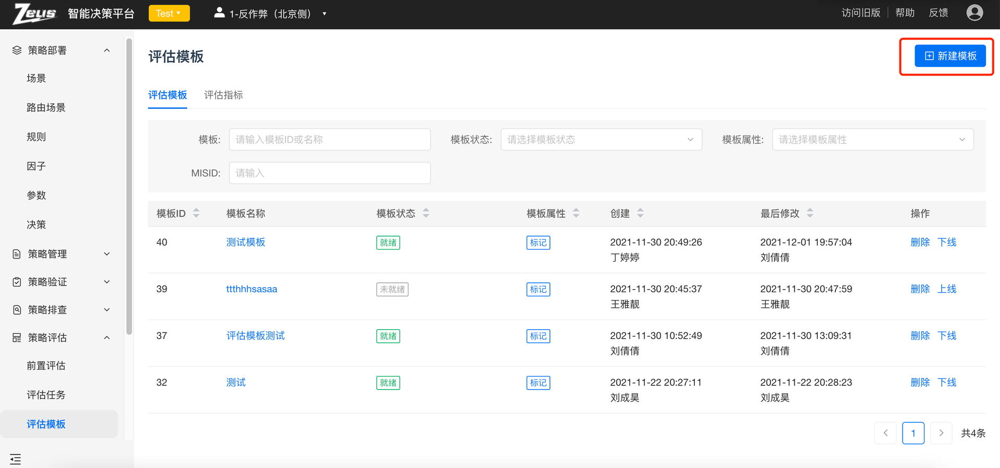

|
说明
入口：
zeus-->策略评估-->评估模板-->评估模板tab
|
页面
|
|
新建：
- 点击右上角「新建模板」按钮，进入将新建模板页面
-
基本信息模板：
必须填写模板名，模板属性（标记模板、在线模板二选一，本期仅上线标记模板）；生效方式（自动、人工二选一，本期仅上线人工模板）
备注：
属性与规则状态挂钩，标记模板评估标记规则，在线模板评估生效规则；
生效方式表明使用该模板的评估任务完成且评估结果通过后，待评估的规则是自动生效还是人工生效，为避免生产问题，本期仅上线人工生效。
- 逻辑配置仅支持模板配置，支持左变量（指标）+操作符+右变量（阈值）的配置方式
- 指标下拉选项为「评估指标tab」的默认指标和用户配置的自定义指标；
- 操作符为>/>=/==/<=/<
- 阈值可以输入数字，支持输入两位小数；
- 每一行可以配置一个指标的判断逻辑，多行之间可以编辑「与/或/非」关系，用户配置复杂逻辑
- 逻辑预览支持用户查看自己所配逻辑是否符合预期
|




|
|
查看
入口：评估模板tab点击模板名称进入「模板详情页」
模板详情页支持查看模板基本信息、逻辑配置信息
|

|
|
修改
入口：评估模板tab点击模板名称进入「模板详情页」--右上角点击编辑进入模板修改页
基本信息、逻辑配置均支持修改
|

|
|
删除/上线/下线
- 删除：无论模板是否被任务使用，评估模板均可以被删除，因为在生成任务之后，模板中的内容已经被copy到任务中；
- 上线：模板配置完成后的状态为未就绪，需要用户上线模板，才可以在开启评估任务时进行选择该模板；
- 下线：就绪状态的模板可以进行下线，下线后状态为未就绪，此时不可以被评估任务选择和引用
|

|